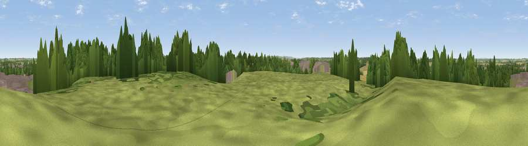

Viewpoint near Bascote
#31908 in England · top 59% of its area beats it · near BascoteThe view, rendered

A 360° render of this exact spot computed from the terrain model, tree cover and land cover — summer colours, afternoon light, calibrated against photographs of famous viewpoints. Real trees, hedges and buildings will differ in detail.
The panorama
Grey silhouette: terrain skyline in each direction (720 bearings, Earth curvature and refraction included). Dashed green: skyline with trees (+15 m) and buildings (+8 m) as obstacles. Blue strip: how far the ground is visible on each bearing.
Where the view opens
Wedge length = distance to the farthest visible ground on that bearing (vegetation-aware). Rings at 10, 25 and 50 km.
What fills the view
39% grassland · 27% woodland · 23% cropland · 10% built-up ·
Angular shares of the visible panorama (visual magnitude), not map area. Landscape diversity 0.58 (0–1 Shannon).
Key numbers
More beautiful places nearby
The staircase of upgrades: each row has a higher view potential than everything closer. Driving times are estimates from straight-line distance, calibrated against real road routing — check an actual route before setting out.
| Place | Direction | Drive | Score |
|---|---|---|---|
| Viewpoint near Stockton | ENE · 3 km | ~7 min | 44.6 |
| Viewpoint near Ladbroke | SSE · 4 km | ~10 min | 45.5 |
| Beacon Hill | ESE · 7 km | ~15 min | 62.2 |
| Viewpoint near Northend | SSW · 12 km | ~22 min | 65.3 |
| Viewpoint near Northend | SSW · 12 km | ~22 min | 66.0 |
| Viewpoint near Northend | S · 12 km | ~22 min | 69.7 |
| Viewpoint near Northend | S · 12 km | ~23 min | 70.3 |
| Viewpoint near Radway | SSW · 15 km | ~28 min | 71.7 |
52.26829, -1.38632 · source: screening · position refined by local search. Computed location — check access rights before visiting.